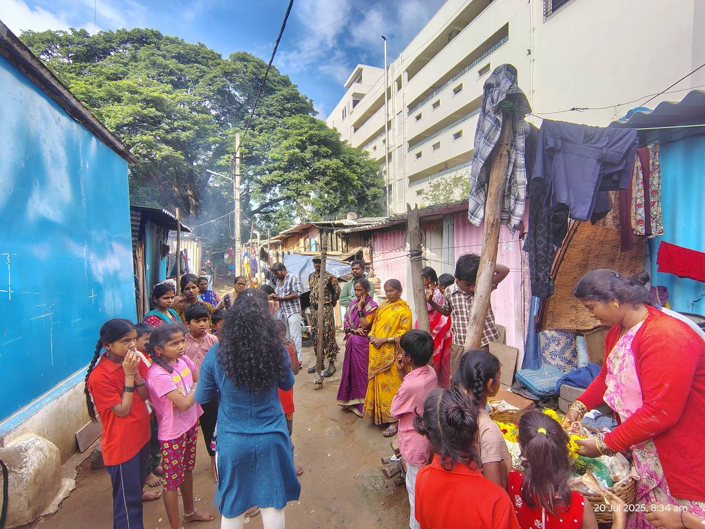
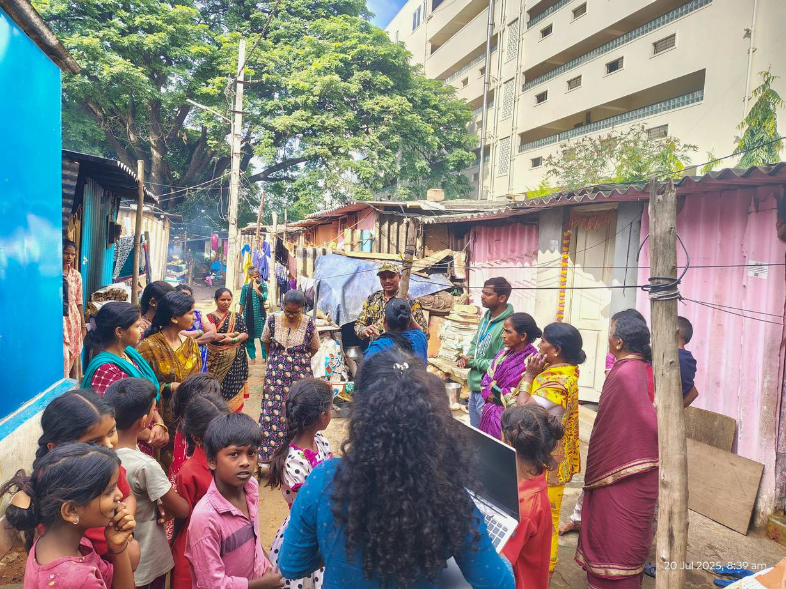

The starting point
Young people in Shanthinagar were eager to contribute but lacked structured guidance, mentoring and real platforms to apply what they learned, which limited youth-led action on waste.
What youth leadership made possible
Ashlesh supported youth leaders to plan and deliver a structured waste awareness session, and to carry out household visits, wall painting and black spot clean-ups. Residents noticed cleaner surroundings and better cooperation with waste collectors.
Why mentoring matters
As a focal person at Need Base India, Ashlesh works with children and young people on education, future planning and personal growth. He joined YCAL to make sure ideas from the hackathon became real action in the community.
He guided youth teams through planning and facilitation, and joined them on household visits, wall painting and cleaning a black spot in KSRTC Colony. The session gave residents practical guidance on segregation, dry and wet waste, and cutting plastic.
What changed
Trust between residents and young leaders grew, and local stakeholders began to see young people as agents of change.
“When young people are given the right platform and guidance, they don't just learn, they lead meaningful change in their communities.”Ashlesh, community mentor